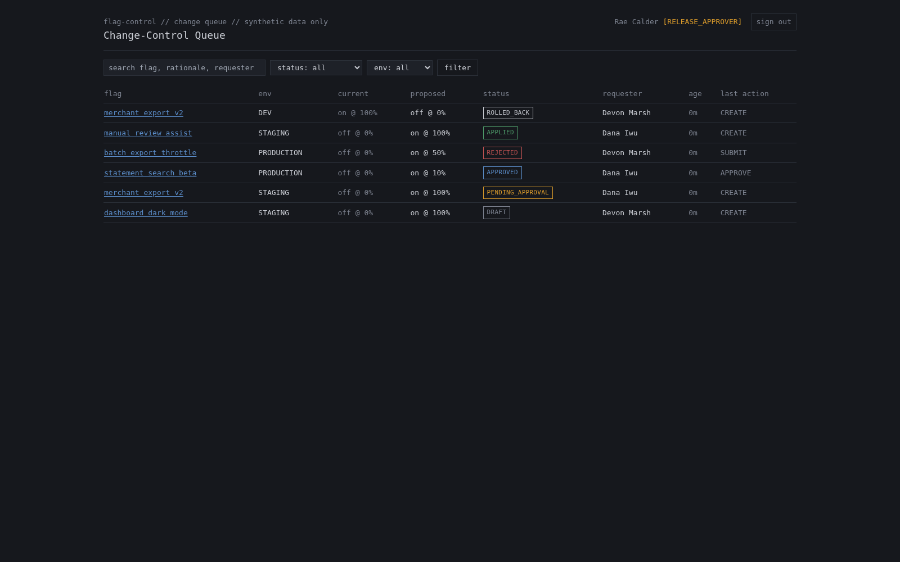

recommendation // $250K/yr platform, 3 apps live, 10 more planned
Keep Power Apps for governed workflows. Prove custom build with Devin on the next bounded tool.
LANE 1: RETAIN on Power Apps
- KYC review queue
- Refunds dashboard
- Anything touching payments, access, or risk policy today
- Keeps DLP, Dataverse audit, managed environments, connector governance
LANE 2: PILOT the custom path
- Feature-flag change-control plane, already prototyped with synthetic data
- Git-native, reviewable, tested, containerized
- Devin accelerates the engineering; your team owns design, security, review, and operations
Power Apps and Devin are not substitutes. One is a governed application platform, the other accelerates engineering work you still own. Any migration decision is earned with evidence, not assumed.
setting // what the platform provides today
The $250K buys governance and operating leverage, not merely screen-building.
| Platform control | What it does for the three live apps | If you build custom |
|---|---|---|
| Identity & access (Entra ID) | SSO, MFA, conditional access | You build or integrate it |
| Dataverse auditing | Managed data-change audit | You build it (prototype: app-layer only) |
| DLP policies | Org-wide connector guardrails | No equivalent; must be designed |
| Environments & ALM | Managed envs, solutions pipeline | Git, CI, and IaC replace it, at your cost |
| Connectors | Hundreds of governed integrations | Each integration is custom work |
| Low-code velocity + operations | Microsoft-run hosting and patching | Your on-call, your patching |
Actual license economics must be validated against your tenant before claiming any savings. The $250K figure is the stated current spend, not an audited number.
conflict // where to test the custom path first
KYC and refunds are the wrong first migration. Feature-flag control is the safer proving ground.
| Candidate | Blast radius | Data sensitivity | Integration complexity | Learning value |
|---|---|---|---|---|
| KYC review queue | high (compliance) | high (PII) | high | low, proves little safely |
| Refunds dashboard | high (money moves) | high (payments) | high | low |
| Feature-flag control plane | low (virtual flags) | none (synthetic) | bounded | high: 5 reusable primitives |
| Future low-risk internal tool | low | varies | varies | inherits the primitives |
Why the bounded flag workflow wins
- Real workflow shape (propose, approve, apply, audit) without touching money or PII
- Failure is recoverable; a bad virtual flag change harms nothing
- Every primitive it proves transfers to the ten tools still to build
resolution part 1 // the working prototype
The prototype shows the control workflow we would need to own.


Workflow (fake provider, virtual flags)
Developer -> Approver -> Apply / Rollback -> Auditor
DRAFT -> PENDING_APPROVAL -> APPROVED -> APPLIED -> ROLLED_BACK
\-> REJECTED
Five reusable primitives
- server-side role policy
- state-transition guard
- two-person approval
- append-only audit writer
- provider adapter
Provider is fake/simulated. All flags and environments are virtual labels in a demo database.
resolution part 2 // delivery evidence, rendered from docs/evidence.js
Devin compressed a multi-day proof package into one assisted hour. UNVERIFIED
Delivered in the assisted session
- Feature-flag change-control POC
- Role-based approval and audit workflow
- Docker-runnable environment
- 10 automated tests and 1 E2E workflow
- Evidence package and this VP presentation deck
Conventional equivalent: typically multi-day delivery.
Commands actually run
Repository facts
Reviewer-agent findings
This is accelerated prototype delivery, not a one-hour production system. Security, real-provider integration, reliability, and operating ownership remain separate work.
honest limits // grounded in PRODUCTION-GAPS.md
The workflow patterns transfer. Enterprise platform guarantees do not.
Replicable with custom code
- Custom UI tuned to the operation
- Server-side role checks
- State machines and approval workflows
- Audit capture in the app layer
- Provider adapters behind interfaces
- Automated unit and E2E tests
Must deliberately replace before production
- Real provider integration: idempotency, outbox, reconciliation
- SSO/OIDC, MFA, on/offboarding
- DLP and data policy equivalents
- Durable, database-enforced audit controls and retention
- Monitoring, alerting, backups
- On-call ownership and patching
next step // decision, not leap
A 90-day pilot should earn, or stop, the migration decision.
Pilot shape
- First: validate the $250K economics against your actual tenant
- Run one bounded virtual flag workflow with real teams
- Security and operations gate before any real provider or production change
Measure
- Cycle time per change
- Failure and recovery rate
- Audit completeness
- Engineering effort and total cost of ownership
Decision paths at day 90
- Expand custom build: primitives proved, economics favorable, gate passed
- Retain Power Apps: governance cost of custom outweighs licensing
- Hybrid: Power Apps for governed workflows, custom for bounded tools
Either outcome is a win: you decide with evidence from your own workflows instead of a vendor pitch in either direction.